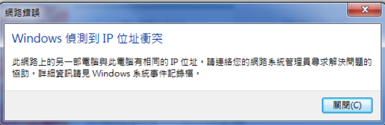

记一次内网Windows不能获取IP的故障
文章目录
前些日子内网发生一个有趣的事情，网络内的机器都能正常上网。但新的机器却获取不了 IP，后来发现原来能正常上网的机器，只要重新获取IP，就都不正常了。
最有趣的地方是，只有 Windows 获取不了 IP，Linux 系统的机器获取 IP 却一切正常。再后来发现不是获取不了 IP，而是每次获取到IP后就报IP冲突，即使是手动设置 IP 也是这样，而哪些 IP 都是没有再使用的。Windows 的报错如下图 
细想之下，从为何 Windows 能判断 IP 冲突的的原因，或许能找到原因。要知道同一个网段是否存在某个 IP 其实很简单，只需要通过发 ARP 广播去问一下 IP 的 MAC 地址，有回包就说明已经有其它机器在使用这个 IP。如果没机器回，那就可以判断为没有机器在使用这个 IP，估计 Windows 也是通过来判断的。
之后就是验证了，WireShark 抓包，果然每次让网卡获取 IP，系统就先发 ARP 来确定要配置的 IP 是否已经有其它使用，有机器回包了就弹出上面报告冲突的提示。我发现无论我配置什么 IP，总有一个源 MAC 地址是写着 VMWARE 打头的机器回包，着实奇怪，最后事情是解决了。
其中还有一个有意思的事情， 上面说 WireShark 抓包时，ARP 包的 MAC 地址一栏居然写的是 VMWARE 。这怎样通过 MAC 地址来过滤啊，过滤的时候想用字符串来过滤 MAC 地址一栏时会报语法错误的。上网查了一下， VMWARE 使用的 MAC 地址应该是限制在某几个段上，所以 WireShark 才会直接辨认出这 MAC 地址是来自于 VMWARE。网上查了一下，有4个 MAC 地址段属于 VMWARE
https://mac-address.alldatafeeds.com/statistics/company/1286
| MAC |
|---|
| 00:50:56 |
| 00:1C:14 |
| 00:0C:29 |
| 00:05:69 |
所以如果我想只看 VMWARE 机器的 ARP 包只需要这样写过滤规则
|
|
文章作者 hao
上次更新 2023-07-19